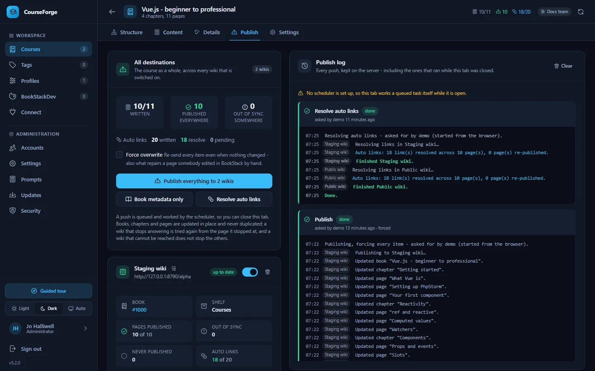
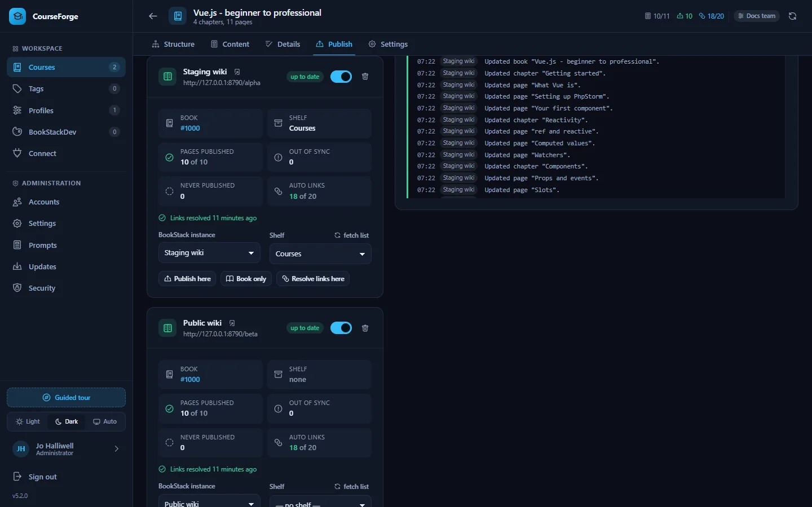

Publish
Publishing to BookStack
Destinations, pushing a course into one wiki or several, the publish log, and how CourseForge keeps BookStack in sync without ever duplicating anything.
The Publish tab sends a course into BookStack over its REST API: the book on a shelf, every chapter, every written page with its effective tags, and real links for every cross reference. Publishing again sends only what changed.


Destinations#
A destination is one BookStack instance from the course's profile, with its own shelf and its own book. A course may have several - a staging wiki and the live one, or the wikis of two departments.
- Add destination and pick one of the profile's BookStack instances.
- Load shelves to fetch that wiki's shelves, and pick the one the book belongs on.
- Save.
Each destination has a switch: off keeps everything already published there on record and simply leaves it out of the next push. Remove is something else, and the dialog says so: CourseForge forgets the book it made there, so publishing to that instance again later creates a second book beside the first. Pointing a destination at a different instance costs the same and asks the same question - to publish to both, add a second destination instead.
Note
The course Settings tab and the MCP update_course tool still take a single BookStack instance, because for most courses "where does this publish" has one answer. They set the first destination; anything behind it is left alone.
Pushing#
The All destinations card speaks for every destination that is switched on:
- Publish everything - the book, its shelf, every chapter and every page that has text.
- Publish the book - only the book and its shelf, which is what a renamed course needs.
- Force overwrite - re-sends even items that have not changed. That is also what repairs a page somebody edited by hand in BookStack.
- Resolve auto links - rewrites cross-reference markers into links without a full push. See Auto links.
Each destination's own card has Publish here, Book only and Resolve links here, acting on that wiki alone - the answer to one wiki having been down while the others were fine.
Single pages and chapters can be published from the Content tab: Publish just this page in the inspector, Publish chapter in the chapter editor.
What a push does#
- Creates the book once, puts it on the shelf, and updates it in place from then on.
- Creates or updates every chapter and page, in order, with its effective tags (own plus inherited). Pages without content are skipped.
- Skips everything whose fingerprint matches what was last pushed to that wiki.
- Recreates an item that was deleted in BookStack. Any error other than a genuine 404 aborts that wiki's push rather than risking a duplicate.
- At the end of a full push, resolves cross references into links in every page that has them.
Nothing is ever duplicated: every item is created once and updated afterwards, and what is fingerprinted is exactly what is sent - resolved links included - so the sync badges never drift from reality.
A push is a task#
Pressing a publish button writes a task down and returns at once. The scheduler works it in slices of one tick each, so you can close the tab, or the laptop.
- A push interrupted half way - a wiki that stopped answering, a host time limit, a process that died - is picked up again from the page it stopped at, never from the start: every item is written and recorded before the next one is looked at.
- Attempts are spaced out: half a minute, a minute, two, five, ten, up to a quarter of an hour, and given up after
app.task_max_attempts(twenty by default). - One wiki failing does not stop the others, and only the failed one is tried again.
- Retry on a task that was given up or stopped carries on from where it got to. Stop ends one, keeping whatever was already written.
- A course never has two tasks worked at once, because a publish and a link pass on the same wiki would write the same pages over each other.
On an installation whose scheduler is not set up - or has stopped calling in - the open tab works a queued task itself, one bounded slice per request, and says so in a yellow strip. Setting up the scheduler is what lets a push carry on with the tab closed.
The publish log#
The log is the server's. Every line a task says - created, updated, skipped, recreated, the link pass, a failure in the wiki's own words - is written down as it is said and shown whenever the tab is opened, grouped under its task with who asked, when, which attempt this is and the state of each wiki. It is the record of what happened while nobody was watching. Clear forgets finished tasks; the thirty most recent are kept per course regardless.
Destination cards#


Each destination's card shows its book and shelf, how many pages it holds, how many are out of sync, how many written pages it does not hold at all, how its cross references resolve - each wiki resolves them against its own book - and what last happened to it: published a minute ago, failed and trying again, failed and given up, with the reason.
The All destinations card folds the counts across every destination that is switched on: published everywhere means published in every one of them, and out of sync somewhere means at least one would be written to. Adding a second destination to a finished course therefore lights up immediately, which is exactly the state it is in.
What BookStack receives#
| CourseForge | BookStack |
|---|---|
| The book title and description from the outline | A book, on the destination's shelf |
| Each chapter and its goal | A chapter with its description |
| Each written page | A page, as Markdown |
| Effective tags (own plus inherited, active only) | Tags with their values |
(🔗 Title) markers |
Real links to the target page in that wiki |
Scopes, extra context and the research briefing are never published: they are instructions to the writer.
For code highlighting, Mermaid diagrams, formulas and embeds in BookStack itself, give the wiki a BookStackDev look.
Over MCP#
set_publish_targets, publish_course (with part: "book" for the book alone), resolve_links, get_publish_status and list_unresolved_links. Over MCP, publish_course runs the push to the end inside the call rather than as a task. See the MCP tool reference.